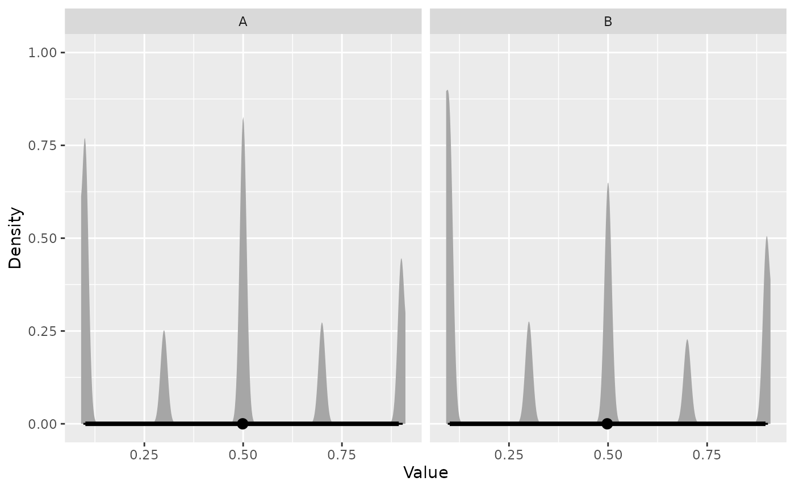

ernest uses comprehensive tests to verify its sampling behaviour against the Python package nestle. This vignette describes some of these tests and demonstrates how to construct likelihood functions for ernest.
Two Gaussian “Blobs”
We estimate the Bayesian evidence for a simple two-dimensional problem with two well-separated Gaussian modes—a classical nested sampling test problem, as the evidence can be solved analytically.
Define the log-likelihood and prior:
# Log-likelihood for two Gaussian blobs
gaussian_blobs_loglik <- function(x) {
sigma <- 0.1
mu1 <- c(1, 1)
mu2 <- -c(1, 1)
sigma_inv <- diag(2) / sigma^2
if (!is.matrix(x)) dim(x) <- c(1, length(x))
dx1 <- sweep(x, 2, mu1)
dx2 <- sweep(x, 2, mu2)
val1 <- -0.5 * rowSums((dx1 %*% sigma_inv) * dx1)
val2 <- -0.5 * rowSums((dx2 %*% sigma_inv) * dx2)
matrixStats::rowLogSumExps(cbind(val1, val2))
}
# Uniform prior over [-5, 5] in each dimension
prior <- create_uniform_prior(lower = -5, upper = 5, names = c("A", "B"))Set up the sampler and run nested sampling:
sampler <- ernest_sampler(gaussian_blobs_loglik, prior, n_points = 100)
result <- generate(sampler, show_progress = FALSE)
#> ℹ Created 100 live points.
#> ✔ `min_logz` reached (0.0498316 < 0.05).For this distribution, the analytical evidence is
.
Use summary to extract the log-evidence
(log_evidence) and its uncertainty
(log_evidence_err):
smry <- summary(result)
smry
#> nested sampling result summary <summary.ernest_run>
#> • No. Points: 100
#> • No. Iterations: 1007
#> ────────────────────────────────────────────────────────────────────────────────
#> • No. Calls: 22258
#> • Log. Volume: -15.26
#> • Log. Evidence: -7.030 (± 0.2709)Plot the progress of the evidence estimate:
plot(result)
Example: Estimating the Evidence for the Eggbox Problem
The “eggbox†problem is a challenging test case for nested sampling due to its highly multimodal likelihood surface. Define the log-likelihood and prior:
eggbox_loglik <- function(x) {
tmax <- 5.0 * pi
if (!is.matrix(x)) dim(x) <- c(1, length(x))
t <- sweep(2.0 * tmax * x, 2, tmax, "-")
(2.0 + cos(t[, 1] / 2.0) * cos(t[, 2] / 2.0))^5.0
}
# Uniform prior over [0, 1] in each dimension
eggbox_prior <- create_uniform_prior(names = c("A", "B"))Visualize the likelihood surface:

Run the sampler and compare the estimated log-evidence to the nestle result ():
sampler <- ernest_sampler(eggbox_loglik, eggbox_prior)
result <- generate(sampler, show_progress = FALSE)
#> ℹ Created 500 live points.
#> ✔ `min_logz` reached (0.0499172 < 0.05).
smry <- summary(result)
smry
#> nested sampling result summary <summary.ernest_run>
#> • No. Points: 500
#> • No. Iterations: 5103
#> ────────────────────────────────────────────────────────────────────────────────
#> • No. Calls: 113177
#> • Log. Volume: -17.00
#> • Log. Evidence: 235.8 (± 0.1212)Plot the posterior distribution:
visualize(result, type = "density")
Adding Data
Often, the likelihood depends on observed data. In ernest, you must
incorporate the data within your likelihood function. Here, we show how
to supply data using both create_likelihood() and an
anonymous function, with a certified dataset from the U.S. National
Institute of Science and Technology (NIST).
# Sample data: vector of observations
y <- c(
100000000.2, 100000000.1, 100000000.3, 100000000.1, 100000000.3,
100000000.1, 100000000.3, 100000000.1, 100000000.3, 100000000.1, 100000000.3
)
# Model likelihood: Y ~ N(mu, sd)
log_lik <- function(theta, data) {
if (theta[2] <= 0) {
return(-Inf)
}
sum(stats::dnorm(y, mean = theta[1], sd = theta[2], log = TRUE))
}Note: log_lik returns -Inf for non-positive
standard deviations, explicitly censoring impossible parameter
values.
Supply data using either an anonymous function or the dots argument
of create_likelihood:
# Anonymous function
anon_log_lik <- \(theta) log_lik(theta, data = y)
# Using dots for create_likelihood
expected_mean <- 100000000.200000000000000
expected_sd <- 0.108372230793914
anon_log_lik(c(expected_mean, expected_sd))
#> [1] 10.0784Define the prior for the mean and standard deviation, then run the
sampler. The prior is constrained near the expected posterior values:
the number of iterations required is proportional to the product of the
number of live points (n_points) and the KL
divergence between prior and posterior.
prior <- create_uniform_prior(
lower = c(99999999, 0.01),
upper = c(100000001, 1),
names = c("mu", "sigma")
)
sampler <- ernest_sampler(anon_log_lik, prior)
result <- generate(sampler, show_progress = FALSE)
#> ℹ Created 500 live points.
#> ✔ `min_logz` reached (0.0499724 < 0.05).Examine the estimated posterior distribution:
draws <- as_draws(result) |>
posterior::resample_draws()Summarize the posterior for each parameter (e.g., median and 95% interval):
posterior::summarise_draws(
draws,
\(x) quantile(x, probs = c(0.05, 0.5, 0.95))
)
#> # A tibble: 2 × 4
#> variable `5%` `50%` `95%`
#> <chr> <dbl> <dbl> <dbl>
#> 1 mu 1.00e+8 100000000. 100000000.
#> 2 sigma 7.71e-2 0.109 0.169